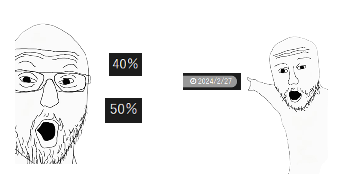

时节 发表于 2026-08-12 更新于 2026-08-11 分类于 blgame ， CAGE :S 八月 是个好季节呢。 八月流火、八月十日、八月十二。 是个要为一切可能的出门机会涂防晒霜的墨镜季呢。 没有节日，和七月同样漫长的31天。 也是这样的季节呢  十五啊， 取七上八下中的七与八相加，取三十年河东三十年河西的三十除二就能得到这么完美的三只手即将数不下的数字。一只手能数到九？什么？这我没听说过 总之 、 总之 ! ! ㊗️ CAGE-OPEN15周年 CAGE-CLOSE14周年